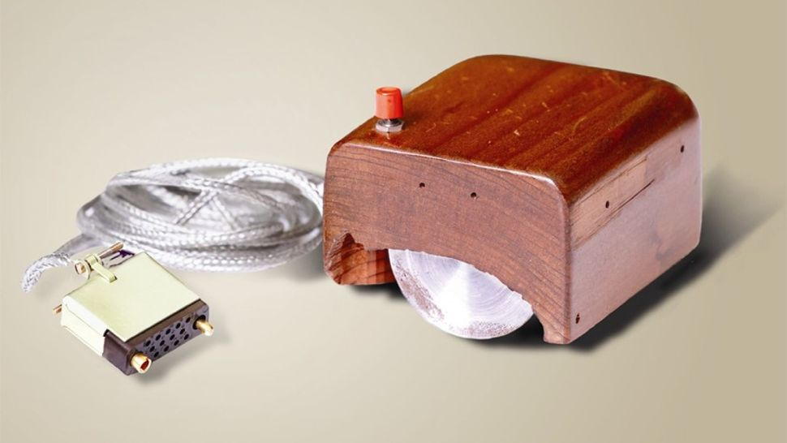

1968 - прототип компьютерной мышки
Дуглас Энгельбарт демонстрирует прототип современного компьютера на Осенней объединенной компьютерной конференции, Сан-Франциско. Его презентация под названием "Исследовательский центр для расширения человеческого интеллекта" включает живую демонстрацию компьютера, включая мышь и графический интерфейс пользователя (GUI), сообщает Институт Дуга Энгельбарта.
 В 1971 году группа инженеров IBM под руководством Алана Шугарта (США) изобрела дискету. Пластиковый диск
площадью 20,32 см2 был прозван дискеткой из-за своей гибкости. В 1980 компания Seagate представила IBM конкурирующий диск. К этому моменту размер 5 МБ
уменьшился до 5,25-дюймового жесткого диска. Он стоил 4300 долларов (в сегодняшних долларах).
В 1971 году группа инженеров IBM под руководством Алана Шугарта (США) изобрела дискету. Пластиковый диск
площадью 20,32 см2 был прозван дискеткой из-за своей гибкости. В 1980 компания Seagate представила IBM конкурирующий диск. К этому моменту размер 5 МБ
уменьшился до 5,25-дюймового жесткого диска. Он стоил 4300 долларов (в сегодняшних долларах).
.jpg) Macintosh стал первым успешным компьютером с графическим интерфейсом пользователя,
управляемым мышью, и был основан на микропроцессоре Motorola 68000. Его бежевый корпус состоял из 23 см ЭЛТ-монитора и поставлялся с клавиатурой и мышью.
Macintosh стал первым успешным компьютером с графическим интерфейсом пользователя,
управляемым мышью, и был основан на микропроцессоре Motorola 68000. Его бежевый корпус состоял из 23 см ЭЛТ-монитора и поставлялся с клавиатурой и мышью.
 С 1991 начались появляться корпуса современного дизайна. Среди ключевых особенностей следует отметить расположение блока питания и
отсека для дисков. Как и во многих других корпусах того времени, в этом корпусе БП установлен над материнской платой. Клетка для дисков в этом корпусе также
фиксированная, без каких-либо вентиляторов охлаждения.
С 1991 начались появляться корпуса современного дизайна. Среди ключевых особенностей следует отметить расположение блока питания и
отсека для дисков. Как и во многих других корпусах того времени, в этом корпусе БП установлен над материнской платой. Клетка для дисков в этом корпусе также
фиксированная, без каких-либо вентиляторов охлаждения.
 С 2000 года компьютеры начали бурно развиваться. Они стали очень доступными. Именно тогда дизайн персонального
компьютера стал поход на то, что у нас сегодня. С этим улучшилась универсальность
С 2000 года компьютеры начали бурно развиваться. Они стали очень доступными. Именно тогда дизайн персонального
компьютера стал поход на то, что у нас сегодня. С этим улучшилась универсальность